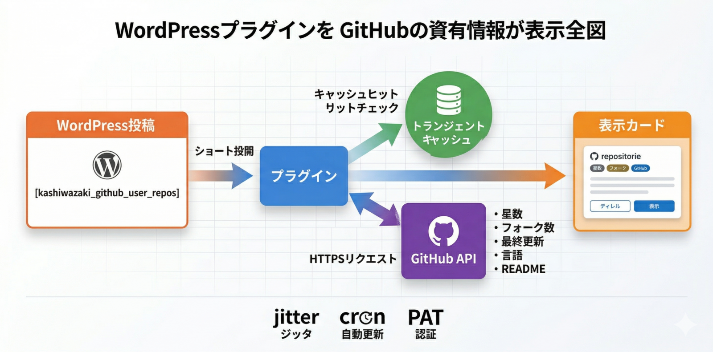

Kashiwazaki GitHub Repository Display マニュアル

Kashiwazaki GitHub Repository Display は、GitHubリポジトリの情報をWordPressサイト上にショートコードで動的に表示するプラグインです。開発者・技術ブロガー・WordPressプラグイン作者が、自分の公開リポジトリを最新の状態で魅力的に紹介するために設計されています。
GitHubリポジトリを記事内で紹介する際、READMEや説明文を手動でコピー&ペーストすると、スターの数・最終更新日・バージョンなどの情報が次第に現実と乖離し、読者に古い情報を伝えてしまう問題があります。本プラグインは GitHub API から最新情報を自動取得し、キャッシュ付きで表示することでこの課題を解決します。ショートコードを貼るだけで、リポジトリの鮮度を常に保った紹介ブロックを記事中に配置できます。
主要機能
動的リポジトリ表示
GitHubリポジトリ情報を3種類のショートコードで表示。単一リポジトリ・複数指定・ユーザー全リポジトリの3パターンに対応し、Card / Minimal / Badges-only の3スタイルを選択可能です。
リポジトリ詳細ページ
リポジトリごとに固有のURLを持つ詳細ページを自動生成します。README.md をMarkdownパースしてHTMLレンダリングし、GitHub Pages ボタンも自動で追加されます。
スマートキャッシュ
GitHub APIのレート制限を回避するためのトランジェントキャッシュ（ジッタ付き）、WP-Cronによる定期バックグラウンド更新、shields.io バッジ表示を内蔵しています。
全体ワークフロー

SEO / GEO における強み
SEO観点
本プラグインのフロントエンドCSS/JSは約18KB程度と軽量で、ページ読み込み速度への悪影響を抑えることができます。また、README.md や readme.txt の内容は Markdown パース済みの HTML として出力されるため、検索エンジンのクローラーがリポジトリの内容を構造化されたテキストとして読み取ることができます。リポジトリごとに固有のパーマリンクを持つ詳細ページが生成されるため、個別URL単位でインデックスされやすくなり、リポジトリ単位の流入経路を獲得できる可能性が高まります。
GEO観点（生成AI検索最適化）
リポジトリの説明や README の内容は、見出し階層・リスト・コードブロックなどの構造を保った HTML として出力されます。そのため、AI検索エンジンやLLMベースのシステムがリポジトリの機能・技術スタック・ライセンス情報などを正確に取得しやすくなります。さらに、表示される情報は GitHub API と定期的に同期されたキャッシュから配信されるため、古い情報を返してしまうリスクを低下させる設計になっています。
本プラグインは検索順位の上昇を保証するものではありません。軽量な出力と構造化されたHTMLにより、ページ表示パフォーマンスやクローラビリティを「低下させない」ことを主眼に設計しています。
目次
| ページ | 内容 |
|---|---|
| 概要 | プラグインの概要・主要機能・SEO/GEO観点での強みを解説 |
| インストール・初期設定 | インストール手順と初期設定、GitHub PAT登録方法 |
| ショートコード | 3種類のショートコードと全属性のリファレンス |
| カスタマイズ | カード表示スタイル・バッジ・ボタンラベルの変更方法 |
| 詳細ページ機能 | リポジトリ詳細ページとGitHub Pagesボタン |
| トラブルシューティング | よくある問題と解決策、技術仕様 |
動作要件
| 項目 | 要件 |
|---|---|
| WordPress | 5.0 以上 |
| PHP | 7.2 以上 |
| 外部通信 | サーバーから https://api.github.com および https://raw.githubusercontent.com への外部HTTPS通信が可能であること |
| GitHub Personal Access Token | 推奨（未使用の場合、GitHub APIのレート制限が 60 req/h に低下します） |
| ライセンス | GPL v2 or later |
インストールと初期設定の手順は インストール・初期設定 ページで説明しています。まずはこちらから読み進めてください。